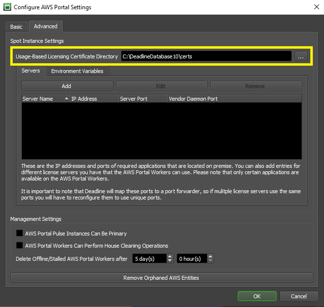

Note
While AWS Portal can enable cloud rendering in Deadline 10, AWS Deadline Cloud is a newer offering that has been built specifically for the cloud. It is a fully managed service that does not require installation or maintenance of infrastructure (e.g., repository, database, or license server). Worker fleet auto-scaling, asset synching, and licensing are all managed natively within AWS by Deadline Cloud. See here for more information on Deadline Cloud and its capabilities.
Usage-Based Licensing Setup¶
Warning
Topics covered in this page refer to legacy Thinkbox usage-based licensing (UBL), which is no longer available as of September 30, 2025. The UBL feature in Deadline 10 is now available through AWS Deadline Cloud UBL. For detailed setup instructions, please see the Deadline Cloud UBL Documentation.
For more details, please refer to the marketplace website.
This section details how to setup Deadline and the AWS Portal to use your Usage-Based Licensing account. You will need to enter your Cloud License Server URL and Activation Code into the Deadline Monitor, and you will need to tell AWS Portal which directory to upload certificates from.
These steps only need to be done the first time you setup UBL.
Configuring Deadline¶
Before you can start using Usage-Based Licensing, you must enter the Cloud License Server URL and Activation Code in the Repository Options.
This can be done from the Deadline Monitor while in Power User Mode (ensure Tools -> Power User Mode is checked). Then select Tools -> Configure Repository Options from the menu, and select Usage-Based Licensing from the list on the left.

Configure AWS Portal¶
Open the AWS Portal Panel in the Deadline Monitor by clicking View -> New Panel -> AWS Portal. The first time you open the AWS Portal panel.
Login with your AWS Access Key and Secret Access Key.
Open the AWS Portal Settings by clicking on the gear on the left of the panel.

In the ‘Advanced’ tab, set the directory you unzipped your certificates to as your ‘Sync Cert Directory’.

{kind=link}
{kind=link}